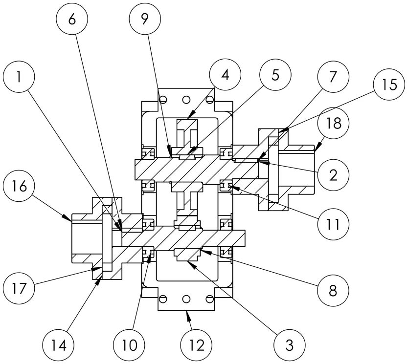

Coursework · Team design project
Spur gearreducer for a tube saw
A group coursework project from a machine elements course. Three of us designed a single-stage spur gear reducer that sits between a 5.5 kW motor and the shaft of an industrial saw for cutting metal tube. The design calculations and the report were the team’s work, and I contributed to both. I did all of the SolidWorks modelling and made all of the drawings.

- Type
- Coursework, group project in a machine elements course
- Team
- Three students
- My part
- All the SolidWorks modelling and drawings, some of the report, and a small part of the calculations
- Tools
- SolidWorks, worked calculations, the course gear stress calculator as a cross-check
- Drawings
- 14 A3 sheets, from assembly to part drawings
Outcome
On paper the design meets the brief on speed, life and reliability. The check that decided the most was gear contact stress, which ruled out the first choice of steel.
- 0.39%How far the saw shaft speed falls under its 628 rev/min target. A 20 tooth pinion and a 47 tooth gear give 625.5 rev/min, inside the 2.5% tolerance.
- 1.22Contact factor of safety on the pinion once both gears are carburised. In through-hardened steel it was 0.74, so the teeth would have pitted well before 10,000 hours.
- 2.51Lowest fatigue factor of safety on a shaft, at the step from 25 mm to 20 mm on the input shaft, against a design factor of 2.5.
Brief
The course gave each group its own saw shaft speed and cutting force. Ours were 628 rev/min, within 2.5%, and an average tangential cutting force of 482 N on a 280 mm blade. The reducer had to run 8 hours a day, 5 days a week for 5 years, about 10,000 hours, with a system reliability of 90%. It was to be built at 500 units a year, so cost mattered.
The brief also fixed the motor family (four-pole, three-phase, 1,500 rev/min synchronous speed) and a mechanical efficiency of 96.5%. The tasks were a pinion and gear, two shafts, four keys, four rolling bearings, two flexible couplings, the bearing mounting, lubrication and shaft seals. Housing strength and casing geometry were not required.
Design
One stage of spur gears, with the motor and the saw each joined to a shaft by a flexible coupling.
The required ratio is the motor speed over the saw speed, 1,470 divided by 628, or 2.3408. Tooth numbers are whole numbers, so a pair can only come close. The team compared seven pairs, from 17 and 40 teeth to 23 and 54, and rejected those with a common factor, a larger speed error, a thin margin over the interference limit, or bigger gears for no real gain. A 20 tooth pinion with a 47 tooth gear gives a ratio of 2.35 and a saw speed of 625.5 rev/min. Twenty teeth is comfortably above the 15 a pinion needs to avoid interference.
One stage is enough for a ratio of 2.35, so a second stage would only add parts. Spur gears won over helical ones because they are simple and cheap to cut, they make no axial thrust, and the pitch-line speed is only 3.85 m/s, where the smoother running of helical gears is not needed. With no thrust, plain deep-groove ball bearings are enough. The report weighed six ways of making the reduction before it fixed the layout: a V-belt, a roller chain, a worm set, a two-stage gear train, and single-stage helical and spur gears.
The module of 2.5 mm came from the workshop chart of module against power and pinion speed, with 3 mm held back as the fallback if the strength check failed. The face width is 25 mm. Pitch diameters of 50 mm and 117.5 mm give a centre distance of 83.75 mm.
Three layout choices were made inside the gearbox. The two shafts lie in one horizontal plane, so the housing can split at the shaft axes and each shaft is lowered in complete with its gear and bearings. Each gear sits midway between its two bearings, which keeps the bearing loads and the tooth tilt down. The pinion is keyed to its shaft, so it can be replaced without scrapping the shaft.
| Quantity | Value | Note |
|---|---|---|
| Power at the saw | 4,437 W | 482 N at a 140 mm radius, 628 rev/min |
| Motor | 5.5 kW, 1,470 rev/min | At least 4,598 W is needed at 96.5% efficiency. Every part is sized for the full 5.5 kW |
| Gear pair | 20 and 47 teeth, module 2.5 mm | Ratio 2.35, centre distance 83.75 mm, face width 25 mm |
| Saw shaft speed | 625.5 rev/min | 0.39% under the target, tolerance 2.5% |
| Shaft torque | 35.73 and 83.97 N·m | Input and output, from the nominal motor power with no loss at the mesh |
| Gear teeth | 2.82 bending, 1.22 contact | Pinion factors of safety, carburised AISI 8620, AGMA method |
| Shafts | 2.51 input, 3.02 output | Lowest fatigue factors of safety, AISI 1045 cold-drawn, design factor 2.5 |
| Bearings | 6204 and 6205 | Rating margins of 1.14 and 1.66 for 10,000 h, system reliability 0.93 |
| Overall size | 295.5 × 271 × 170 mm | Over the couplings, across the housing flanges and in height |
Every number on this page is taken from the group’s final report.
Gears
The gear check is the one that changed a decision.
The team checked the teeth for bending at the root and for surface fatigue, called contact stress, with the AGMA method taught in the course, at 99% reliability for 10,000 hours. For the pinion that gives a bending stress of 116.9 MPa and a contact stress of 796 MPa. A factor of safety is the allowable stress divided by the actual stress.
The gears were first specified in through-hardened steel at 240 HB, as in the lecture example. That passes in bending but fails in contact, with a factor of safety of 0.74. The team compared three remedies:
- Through-hardening to 400 HB passes only narrowly (1.12) and is hard to cut.
- A module of 3 mm with a 30 mm face lowers the contact stress to 613 MPa, but through-hardened steel still fails (0.96) and the centre distance grows from 83.75 mm to 100.5 mm. Widening the face to 39 mm on the original gears still gives only 0.92.
- Changing the material alone solves it. With both gears in carburised AISI 8620 the factors of safety are 2.82 in bending and 1.22 in contact, and nothing else in the design changes.
The teeth are cut soft, carburised and then finished, as noted on the drawings. The report calls 1.22 acceptable, though not generous.
Shafts and bearings
Each shaft is treated as a simply supported beam on its two bearing centres, 95 mm apart, with the gear force at mid-span. The shafts are AISI 1045 cold-drawn steel, stepped so that every part slides on from its own end. The gear force puts 760.5 N on each bearing and a peak bending moment of 36.12 N·m at the pinion. Every change of section was sized with the distortion energy Goodman criterion and a design factor of 2.5: the workshop asked for 2 to 3, the loading is medium shock, and the motor can briefly deliver 3.1 times its rated torque.
The pinion seat comes out at 25 mm and the gear seat at 30 mm, and every section meets 2.5. On the input shaft the tightest section is not the keyseat but the step from 25 mm to 20 mm, at 2.51, because the smaller diameter starts where the bending moment is still 21.83 N·m. On the output shaft the lowest value is 3.02, at the coupling keyseat. Neither shaft yields at the motor’s breakdown torque.
Each bearing carries only a radial load, so deep-groove ball bearings do the job: a 6204 at each end of the input shaft and a 6205 at each end of the output shaft. The four act in series inside the 90% system reliability, so each needs a reliability of 0.974. The input pair is the critical one, because it turns 2.35 times faster on a smaller seat. It needs a load rating of 11.86 kN and the catalogue gives 13.5 kN, a margin of 1.14. The output pair needs 8.92 kN against 14.8 kN, a margin of 1.66. With the gears and shafts included, the system reliability works out at 0.93.
Four parallel keys carry the torque, one under each gear and one under each coupling hub. They are a softer steel than the shafts and hubs, so an overload damages the cheap part first. The lowest key factor of safety is 3.39, or 2.78 if only the straight part of a round-ended key is counted as loaded.
Model
I modelled the whole gearbox in SolidWorks and drew every sheet of the drawing set.
The model has the two shafts, the pinion and gear with their teeth, four bearings, four keys, two retaining rings, two flexible couplings with their hubs and rubber spiders, and a split housing. The drawing set is 14 A3 sheets in third-angle projection, in millimetres. It holds the assembly drawing with its parts list, the section view and an isometric view, the general arrangement, a schedule of purchased parts, and eleven part drawings for the shafts, pinion, gear, coupling hubs, spider and the two housing halves. Fits are marked to ISO 286 on the shaft and gear drawings.
The numbers in the section view at the top of the page are item numbers from the parts list on the assembly drawing. Items 1 and 2 are the input and output shafts, 3 the pinion and 4 the gear, 5 to 7 the keys, 8 and 9 the retaining rings, 10 and 11 the 6204 and 6205 bearings, 12 the lower housing, and 14 to 18 the coupling hubs and spider. The upper housing, item 13, is not labelled in this view.
The model changed some of the calculations. The shoulders and grooves on the drawn shafts are not exactly where the earlier calculation had assumed them, so the team checked every shaft section again at its drawn position. That moved the tightest section of the input shaft from the pinion keyseat (2.70) to the step from 25 mm to 20 mm (2.51). The model also showed that the pinion hub had to shrink from 45 mm to 43 mm, so that it sits inside the root circle and the gear cutter can run out of the teeth, and that the output coupling key had to be 28 mm long instead of 32 mm, to keep its keyseat clear of the shoulder fillet.
Limits
This is a design study, and the report lists what is still open.
- The housing in the model is a simplified casing, which the brief allowed. The bearing end covers, the shaft lip seals and a 21.7 mm distance sleeve beside one input-shaft bearing are specified in the report but not modelled, and the bearing bores are given by a note on the housing drawings. The covers and seals would need each shaft extension to be about 13 mm longer than drawn.
- The loads are the motor’s nominal 5.5 kW applied steadily. Shock is covered by the design factor and an overload factor, not by a measured load spectrum.
- The contact factor of safety of 1.22 is tight. The report notes that a module of 3 mm would raise it to 1.59, at the cost of a larger unit.
- The saw shaft diameter of 40 mm is an assumption, because the brief does not give it.
- A running test of the oil temperature is still to do, and an independent check of the gears and shafts in commercial gear software was planned but not completed.
My part
This was group coursework with two team mates, so most of this page describes the team’s work.
The design calculations were the team’s work, to which I contributed a small part. I also contributed to writing the report. I did all of the CAD modelling in SolidWorks and made all of the drawings, which are the model and the drawing set described above. Where this page says the team, it means all three of us, and everything outside the model and the drawings is described from the group’s final report.